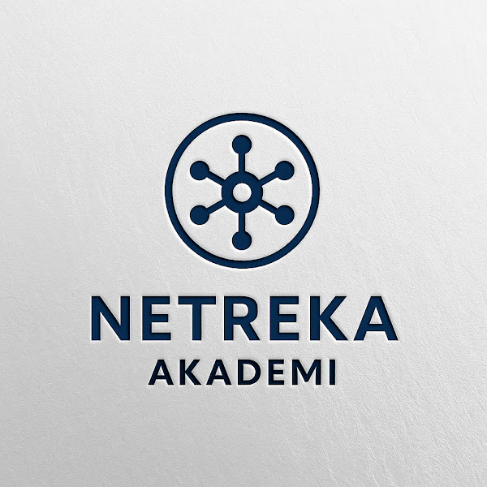
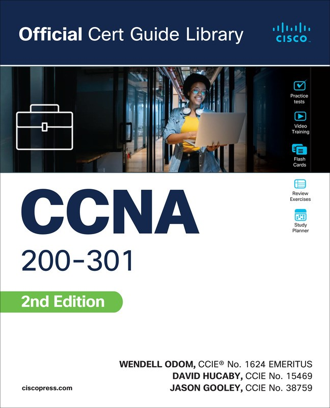
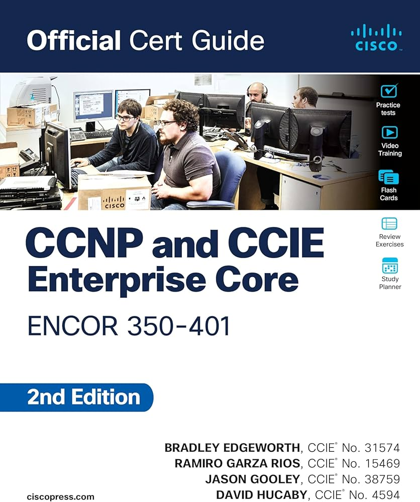
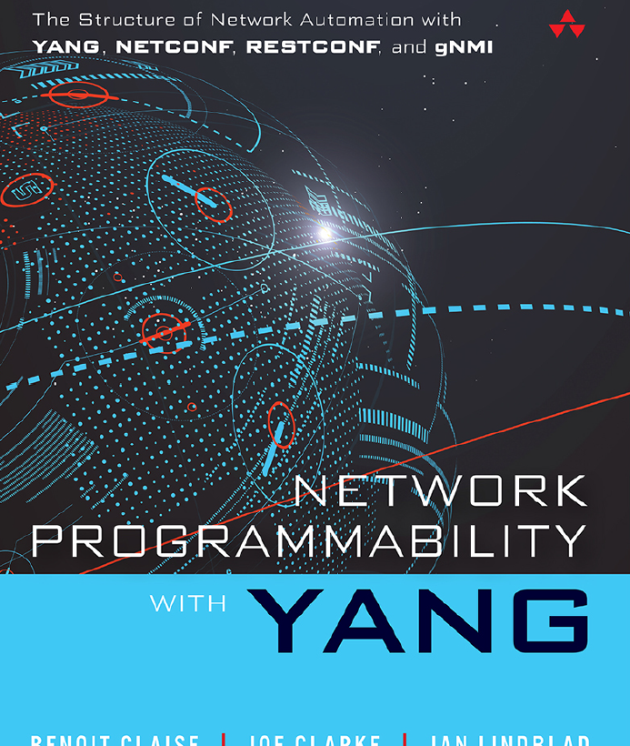
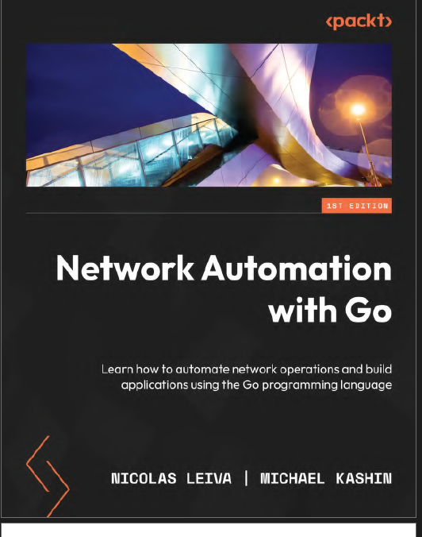

Netreka Nexus (Microservices Hub)
Broker pattern, RabbitMQ event-driven, gRPC logging, Docker Swarm, Caddy gateway.
Yasin Engin is a Computer Engineering student building production-grade backend systems and network automation tools. Focused on Go, gRPC, distributed systems, and SDN.
Yasin Engin publishes engineering notes, case studies, and hands-on lab writeups about SDN, Go, gRPC, and distributed systems.
Broker pattern, RabbitMQ event-driven, gRPC logging, Docker Swarm, Caddy gateway.
Leader–member, mTLS gRPC, heartbeat failure detection, disk persistence, metrics/logging.
Nokia SR Linux, Ansible, Containerlab, and gNMI based automation workflows.
Implementation of network protocols, sockets, and HTTP servers using Go.
REST API backend service with clean routing, validation, and JSON responses.
Technical writing on network automation, gRPC API design, incident response, and practical production checklists.
A practical checklist for shipping reliable network automation in small production environments.
Design principles for low-friction gRPC APIs used by controllers and network services.
A short triage model to reduce mean time to recovery when network automation fails.

"Herkes İçin Netreka!" sloganıyla teknoloji eğitimleri.

Wendell Odom

Bradley Edgeworth

Benoit Claise, Joe Clarke

Nicolas Leiva, Michael Kashin
Thierry Arrabal, Julien Caposiena, Frédéric Le Mouël, Stéphane Frénot, Oscar Carrillo
George Xylomenos, Christopher N. Ververidis, Vasilios A. Siris, Nikos Fotiou, Christos Tsilopoulos, Xenofon Vasilakos, Konstantinos V. Katsaros, George C. Polyzos